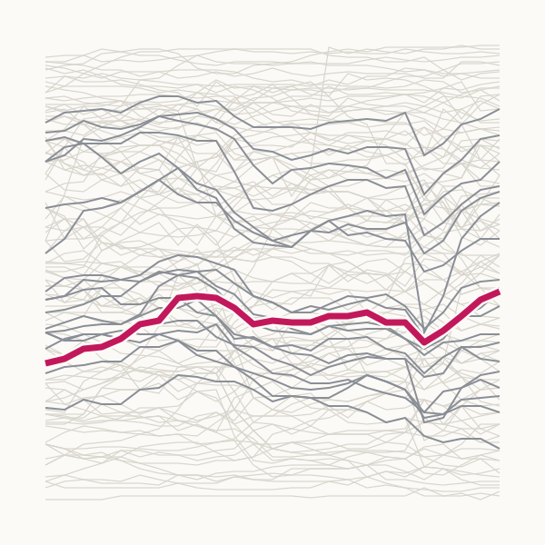
Galicia na escaleira europea
En 2000 Galicia era a rexión 157 de 224 da UE en PIB por habitante en poder de compra; en 2024 é a 122, co 84 % da media europea, o seu mellor posto da serie.
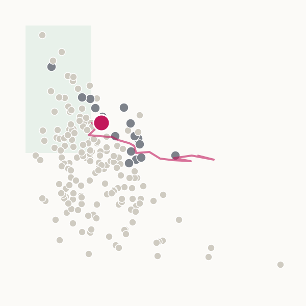
Menos abandono, máis títulos
En 2025 só o 10,4 % dos mozos galegos deixara os estudos sen pasar da ESO, fronte ao 23,6 % de 2008, e o 53,3 % dos de 25 a 34 anos ten estudos superiores, nove puntos máis ca media da UE.
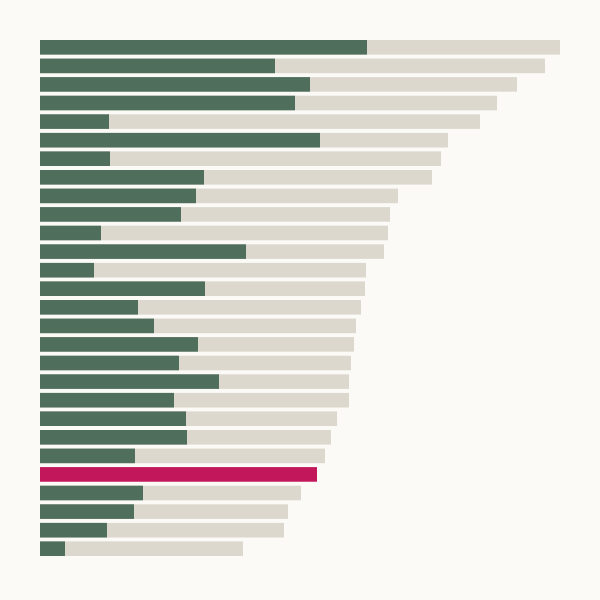
O lixo de cada quen
En 2023 recolléronse en Galicia 416 kg de residuos municipais por habitante, 94 menos ca media da UE; pero só o 17,6 % chega por recollida separada, fronte ao 23,9 % de España.
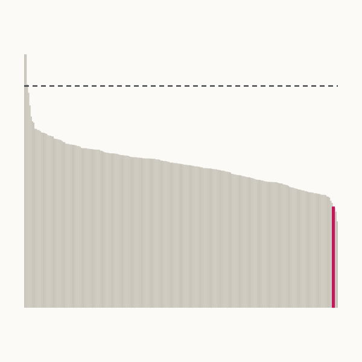
Os berces de Europa
En 2024 Galicia tivo 0,96 fillos por muller, a cuarta cifra máis baixa das 244 rexións da Unión Europea (posto 241 de 244). A media da UE foi de 1,34.
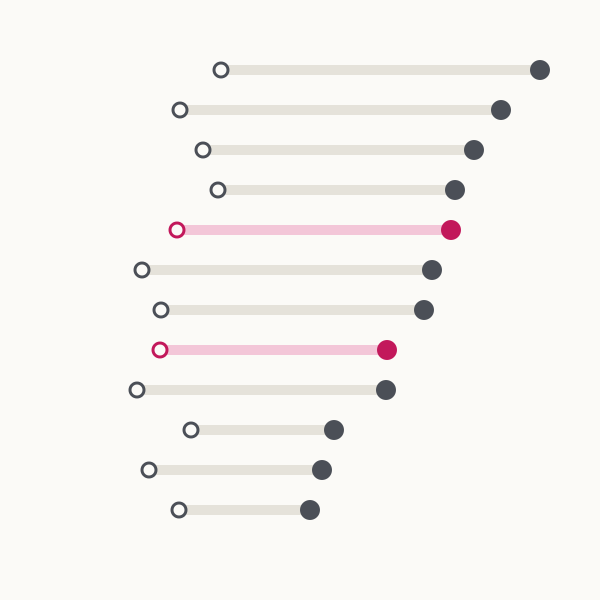
Os que pasan dos cen
A 1 de xaneiro de 2026 vivían en Ourense 322 persoas de 100 anos ou máis, 10,5 por cada 10.000 habitantes: a quinta provincia de España, despois de Soria, Zamora, Salamanca e Ávila. Lugo é a oitava.
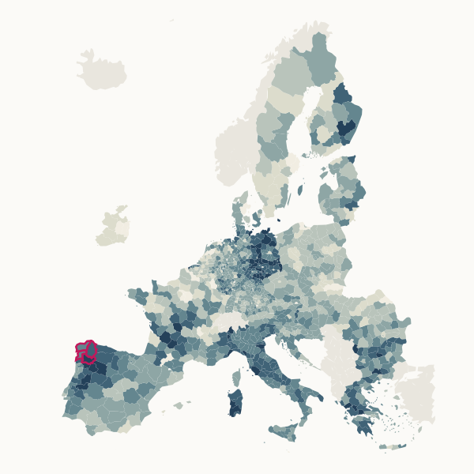
O mapa das canas
A metade da poboación de Ourense ten máis de 53,3 anos: é a 29.ª rexión máis envellecida de 1.165 da Unión Europea (2025), e Lugo a 59.ª. A idade mediana da UE é de 44,9 anos.
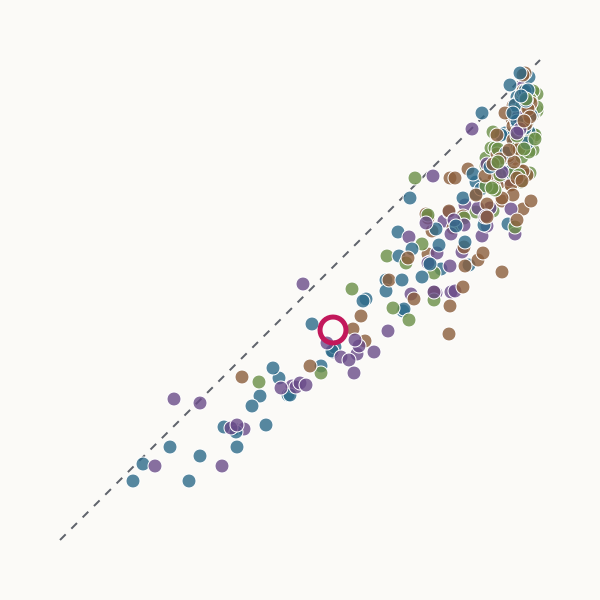
Onde se fala sempre galego
No Censo de 2011, o 43,8 % da poboación de 5 e máis anos dicía falar sempre en galego, 13 puntos menos ca en 2001. O uso habitual baixou en 305 dos 313 concellos.
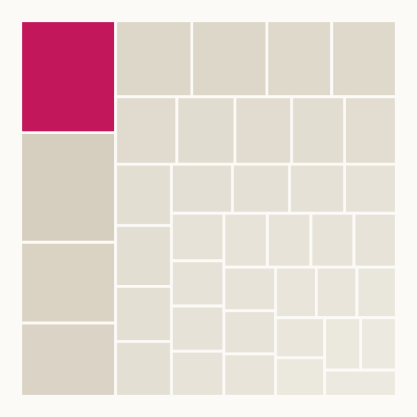
Os nomes que se repiten
Das 30.518 entidades de poboación do Nomenclátor de 2025, 433 chámanse Vilar (ou Vilares) e 424 Outeiro; detrás veñen Igrexa, Castro e Pazo.
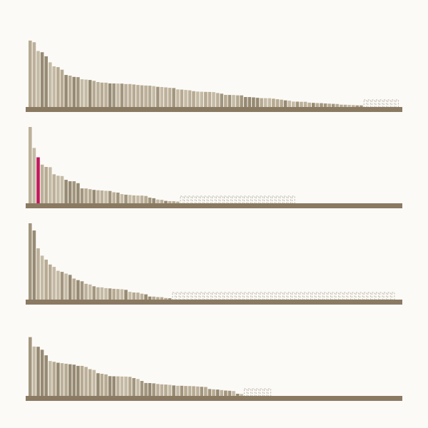
O andel de cada concello
En 2024 as bibliotecas públicas galegas fixeron 2,29 millóns de préstamos, 0,84 por habitante; 84 concellos, con 141.459 veciños, non tiñan ningunha biblioteca pública.
O mexillón do mundo
Coas súas bateas, Galicia sería o terceiro produtor mundial de mexillón de acuicultura: 178.069 toneladas en 2023, o 9,5 % do total, só por detrás de China e Chile.
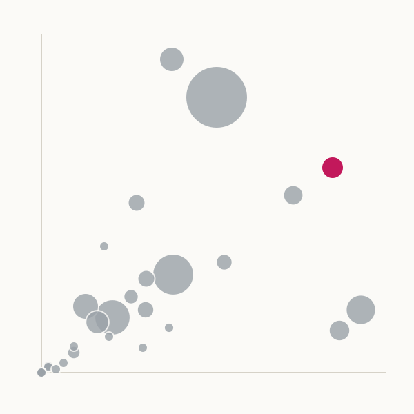
Vento por cabeza
Galicia tiña 3.932 MW eólicos en 2024: 1.448 vatios por habitante, 2,8 veces a media da UE e máis ca Dinamarca. Sería terceira da UE por habitante e por km².
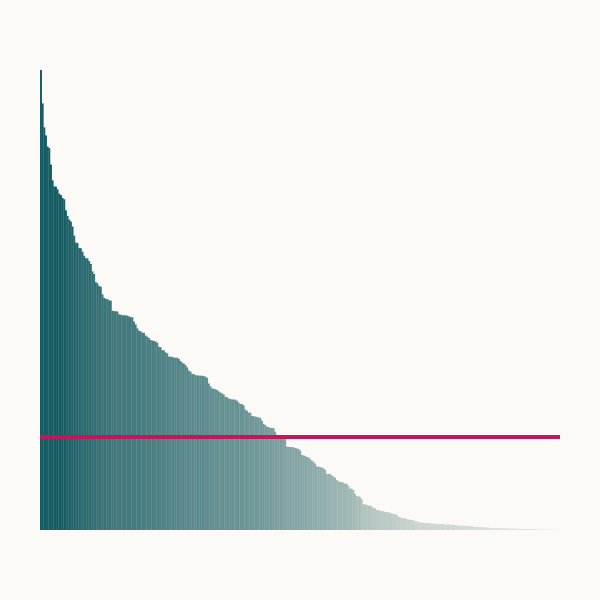
Un país de árbores
O 48 % de Galicia é bosque, máis ca en España, Portugal ou Francia. O eucalipto cobre o 13,8 % do territorio, máis ca en Portugal continental (9,5 %), e en 59 concellos pasa do 30 %.
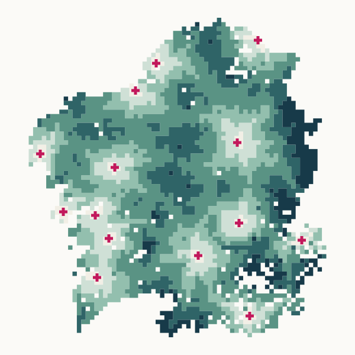
Canto queda o hospital
Para máis da metade dos galegos (53 %) o hospital público máis próximo está a 15 minutos en coche ou menos, pero 515.000 persoas viven a máis de media hora e en Negueira de Muñiz a viaxe media chega a 103 minutos.
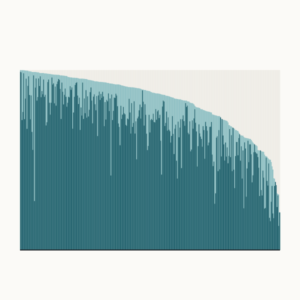
A fibra, concello a concello
En xuño de 2025, o 94,1 % dos fogares galegos podía contratar 100 Mbps e o 85,2 % 1 Gbps, pero en 11 concellos os 100 Mbps non chegan nin á metade das casas.
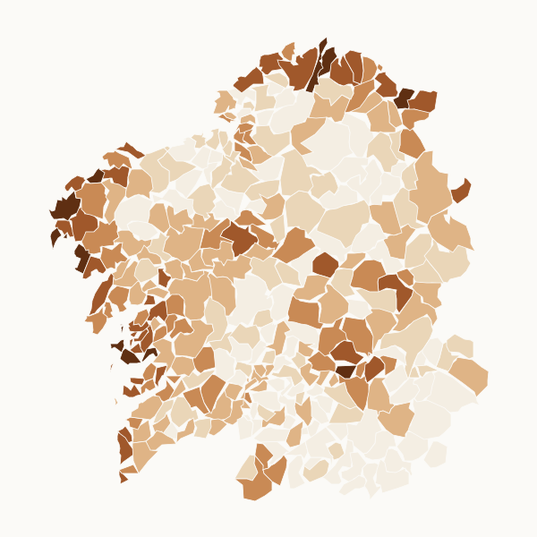
Casas para turistas
En maio de 2026 había 0,99 vivendas turísticas anunciadas por cada 100 vivendas en Galicia; en Fisterra e Sanxenxo son 7,8 de cada 100.
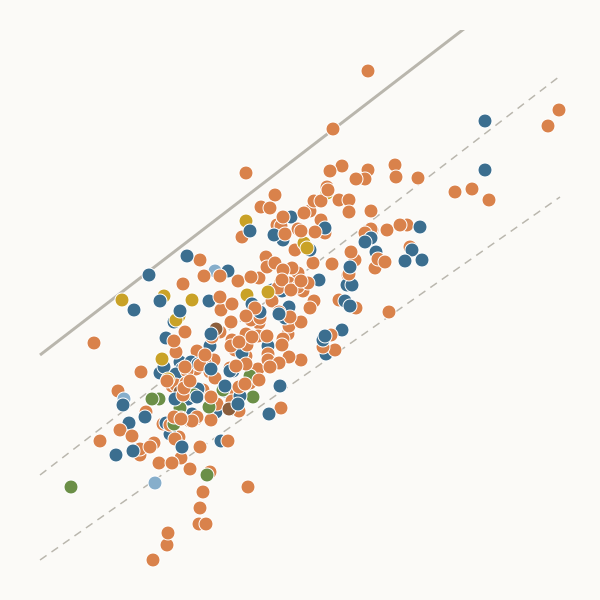
Camas para cada veciño
Galicia ten 10,8 prazas de aloxamento turístico por cada 100 habitantes; en Sanxenxo, o concello máis turístico, son 185, e Barreiros e O Grove tamén teñen máis camas para visitantes ca veciños.
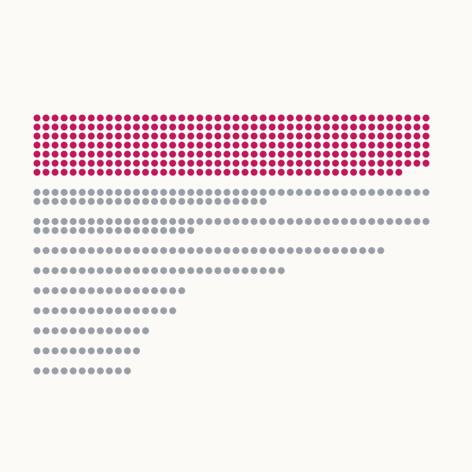
A metade dos lugares de España
Das 62.151 entidades singulares de poboación que o INE conta en España, 30.518 están en Galicia: o 49,1 %, nun 5,9 % da superficie. Un punto por cada cen lugares.
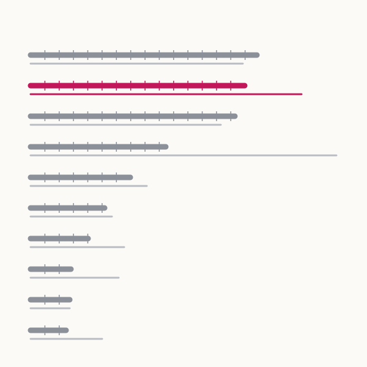
A costa estirada
Estirada en liña recta, a costa galega mide 1.498 km segundo o IGN e 1.895 km seguindo o deslinde polas rías: unha costa de país, entre a de Portugal e a de Irlanda.
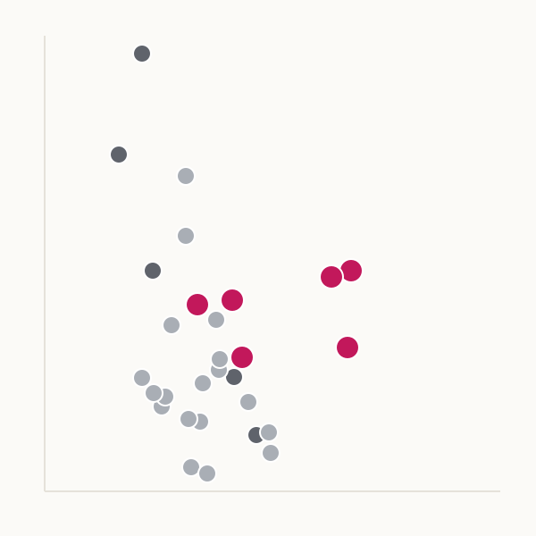
Chove, pero hai sol
Vigo recolle 1.696 l/m² ao ano, 2,8 veces o que cae en Londres, pero as cidades galegas teñen entre 1.896 e 2.290 horas de sol, máis ca Londres, París, Bruxelas ou Dublín.
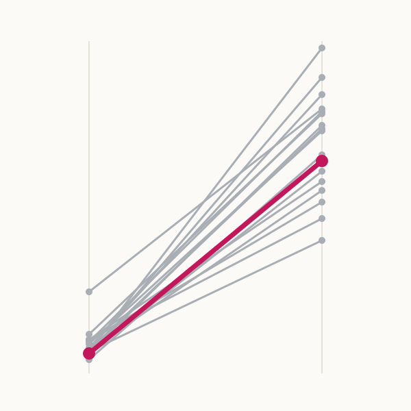
Moitos coches, poucos enchufes
Galicia ten 593 turismos por cada 1.000 habitantes, a terceira cifra máis alta, pero só o 1,3 % do seu parque leva a etiqueta CERO (España: 2,5 %); nas matriculacións de 2025, o 16,3 %.
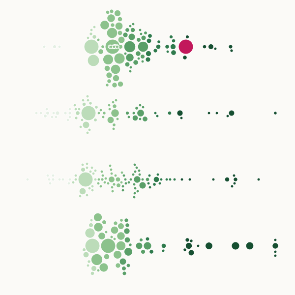
O vidro, concello a concello
En 2025 cada galego levou ao contedor verde 15,6 kg de vidro, menos que os 18,9 de 2022. Santiago chega a 26,0 kg por habitante e Ourense queda en 10,3.
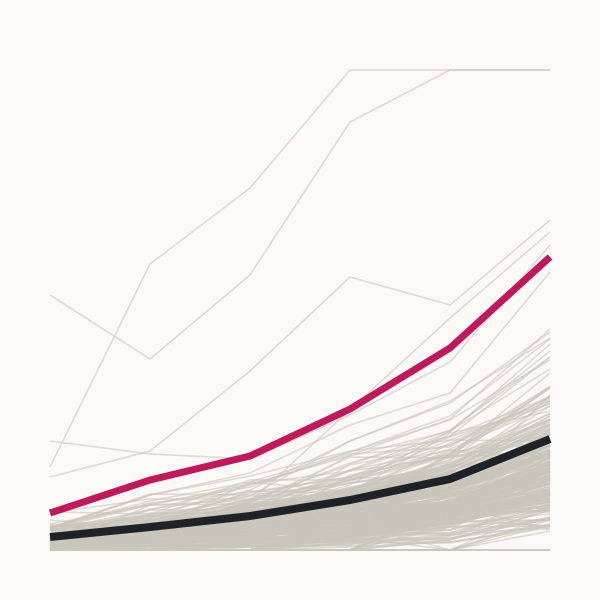
A etiqueta CERO chega aos concellos
Galicia tiña a finais de 2025 25.039 vehículos con etiqueta CERO, 8,9 veces máis que en 2020, pero son 9,2 por cada mil habitantes fronte a 17,0 en España.
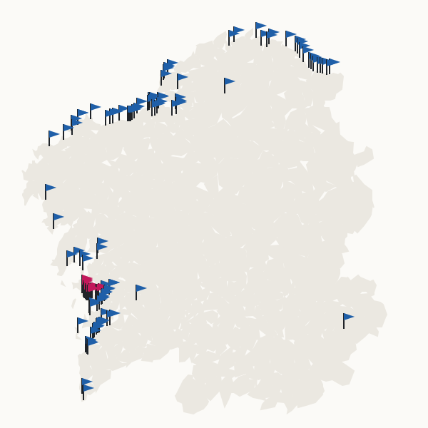
As bandeiras azuis
Galicia ten 118 praias con bandeira azul en 2026, terceira comunidade en número; pero por quilómetro de costa baixa ao posto 7 de 12, con 7,9 por cada 100 km.
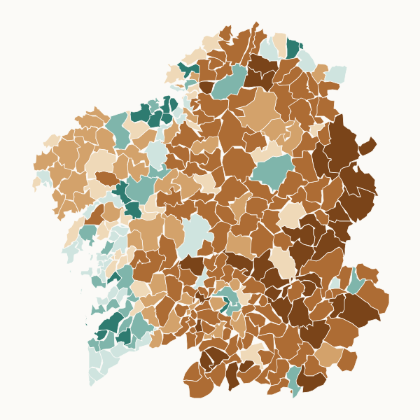
Os que medran e os que se baleiran
Galicia ten un 4 % máis de habitantes ca en 1950, pero só 77 dos 313 concellos teñen hoxe máis xente e 156 perderon máis da metade: Oleiros multiplicou a súa poboación por 3,7 e A Veiga quedou co 14 %.
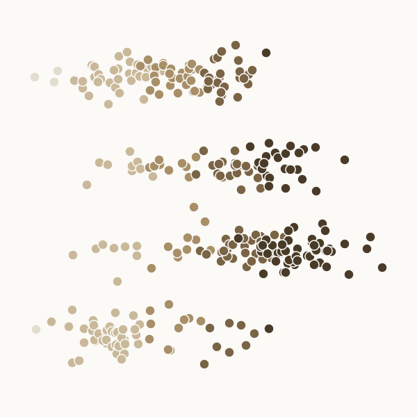
Do concello máis novo ao máis vello
A idade media galega é de 48,5 anos (2025), pero vai dos 42,6 de Ames aos 64,5 de Lobeira; en 159 dos 313 concellos hai tres ou máis maiores de 65 por cada menor de 20.
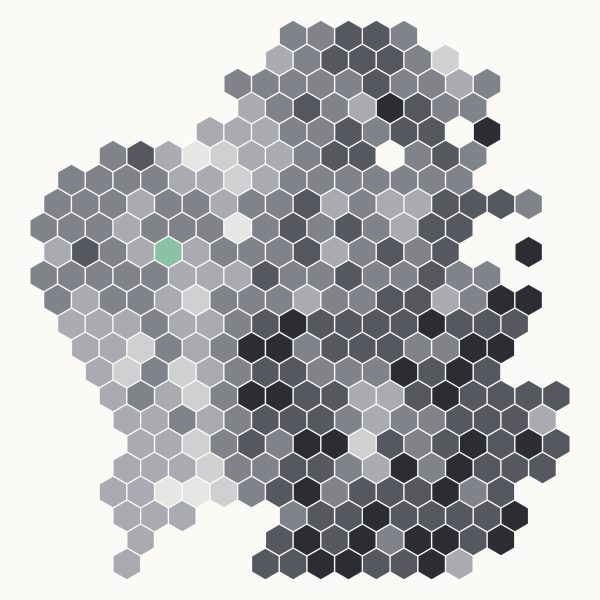
Máis enterros ca bautizos
Entre 2021 e 2025, 312 dos 313 concellos galegos tiveron máis defuncións ca nacementos (só Ames, non); en 1975-1979 pasaba en 157. En 2025 houbo 4 nacementos por cada 10 defuncións.
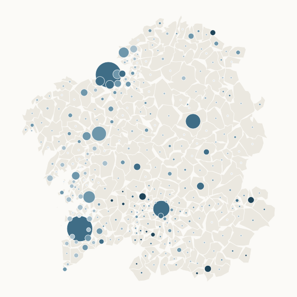
Nados fóra, veciños aquí
331.997 veciños de Galicia (12,2 %) naceron fóra de España, sobre todo en Venezuela, Colombia e Arxentina; en Avión son o 35,4 % da poboación.
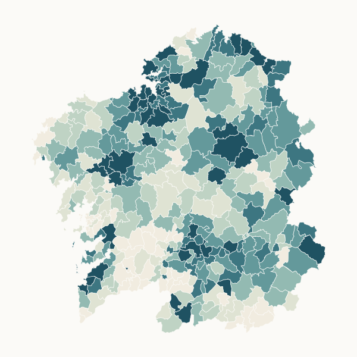
Canto se gaña en cada concello
En 2024 a renda neta media en Galicia foi de 15.471 euros por persoa, pero entre concellos vai de 20.827 € en Oleiros a 10.083 € en Avión. E dentro da Coruña, a sección censal máis rica ten 3,5 veces a renda da máis pobre.
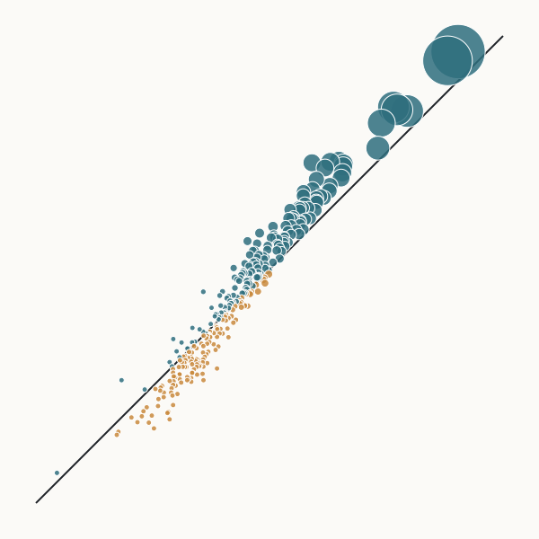
Quen paga as pensións
A fin de 2024 vivían en Galicia 1,48 persoas afiliadas á Seguridade Social por cada pensionista, pero en 144 dos 313 concellos hai máis pensionistas ca afiliados. En Beariz quedan 0,40; en Ames, 3,23.
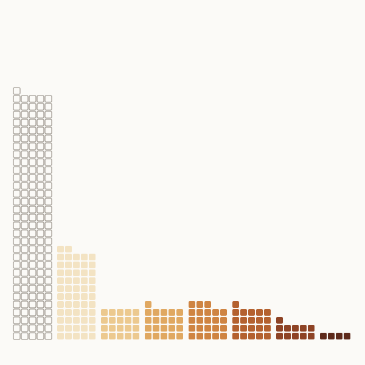
Os concellos que non deben nada
A fin de 2025, 156 dos 313 concellos galegos non tiñan ningún crédito pendente. Entre todos debían 272,8 millóns, 101 € por habitante e un 47 % menos ca en 2015; só Os Blancos, Miño, Pol e Catoira pasan dos 1.000 € por veciño.
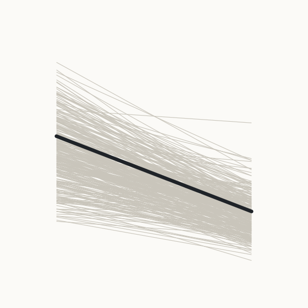
O paro, concello a concello
En setembro de 2012 había en Galicia 259.373 persoas no paro rexistrado, o 14,3 % da poboación de 15 a 64 anos; en setembro de 2025 eran 113.085, o 6,7 %. A taxa baixou en 309 dos 313 concellos.
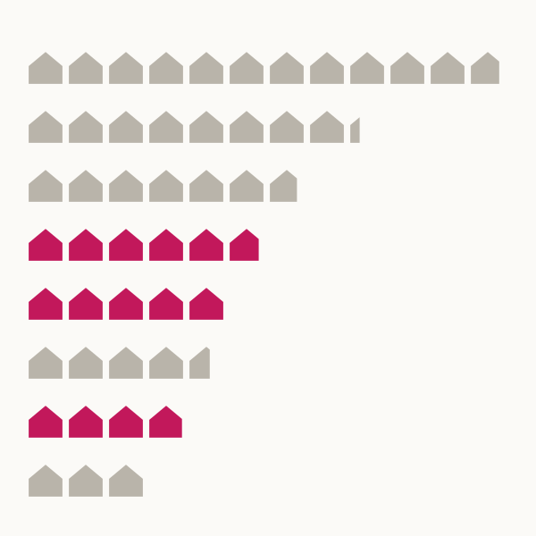
Canto custa unha casa en anos
Unha vivenda de 90 m² ao valor tasado medio de 2024 custaba en Galicia 5,1 anos de salario medio, fronte a 11,8 nas Illes Balears e 3,0 en Ciudad Real. Pontevedra é a galega máis cara (5,8 anos, posto 17 de 48).
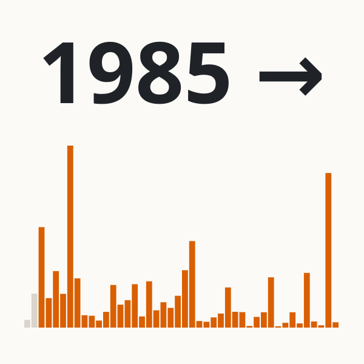
Dende que naciches
Escribe o ano no que naciches: canto subiron os prezos, que daba de si o salario mínimo (un piso, un coche, a compra, un café), cantas hectáreas arderon, canto quentou Galicia, como cambiou o mundo e que noticias deu o teu ano.
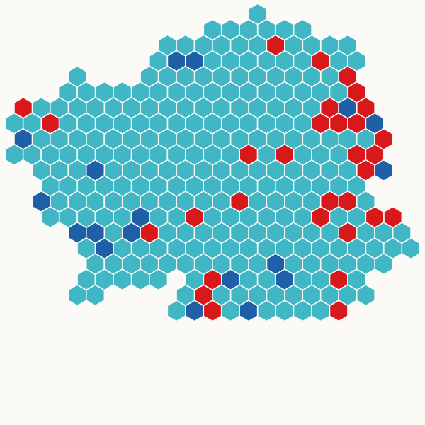
Galicia en hexágonos electorais
Autonómicas, municipais e xerais dende 2000, concello a concello, nun mapa onde todos pesan igual. Vótase o mesmo para a Xunta, o concello e o Estado? Só en 198 concellos gañou o mesmo partido nas autonómicas de 2024 e nas municipais de 2023.
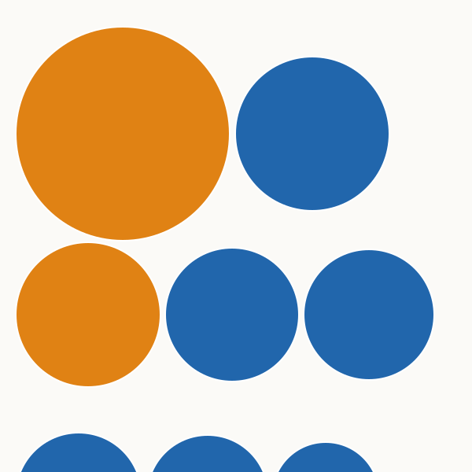
As centrais de Galicia, en megavatios
Douscentos parques eólicos, encoros e ciclos combinados, cada un co tamaño dos seus MW, ao xeito de Mega-What?, e as térmicas de carbón que xa pecharon. Con canto cobren dos totais oficiais de REE.
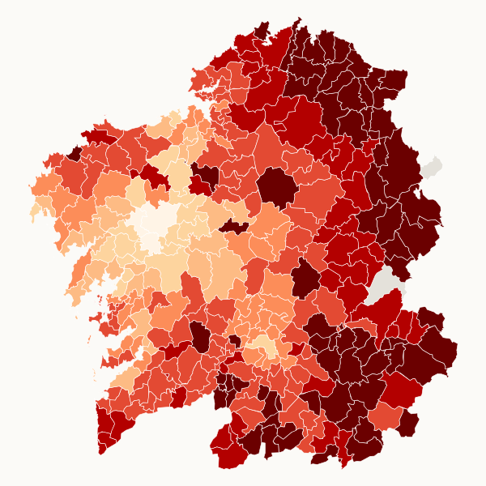
Galicia en horas de autobús e tren
Un martes pola mañá, saíndo de Santiago en bus ou tren, chégase en menos de dúas horas a 96 dos 313 concellos. O mapa de Galicia medido en horas de transporte público dende as sete cidades, e deformado polo tempo.
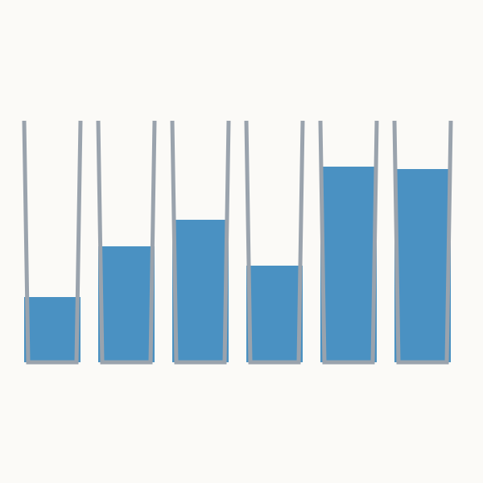
Os encoros, vaso a vaso
Corenta encoros das concas galegas debuxados coma vasos que se enchen e se baleiran, semana a semana dende 1988. Move a data ou dálle ao play: o inverno énchea, o verán e as turbinas baleírana.
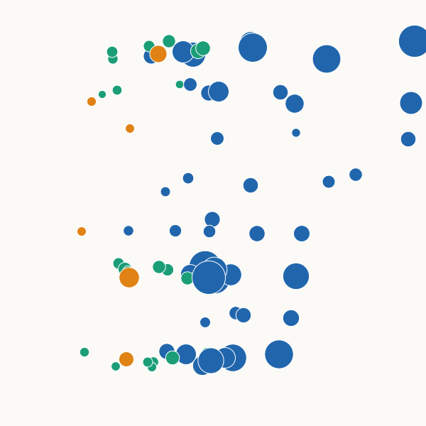
Canto esperas no Sergas
55.348 persoas agardaban por unha operación en xuño de 2026, cunha espera media de 91 días. Hospital a hospital e especialidade a especialidade, canto cambia segundo onde vivas, e a serie dende 2014.
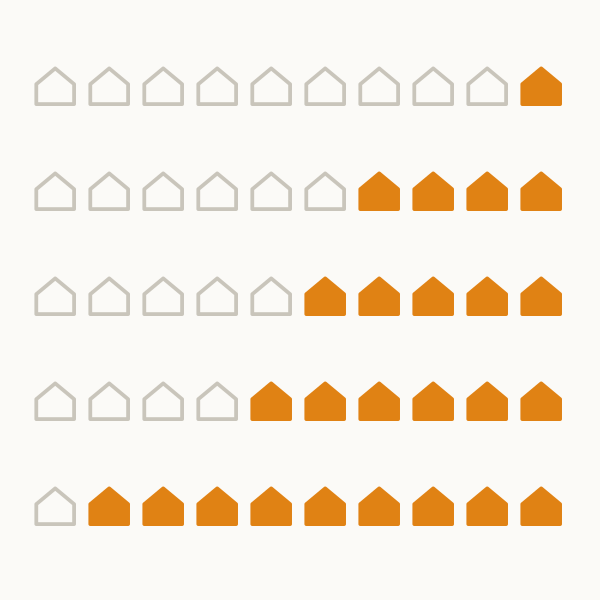
As casas baleiras
Catro de cada dez vivendas galegas non teñen ninguén empadroado. Concello a concello, cantas casas están apagadas, e onde son abandono (sen xente e sen luz) ou segundas residencias.
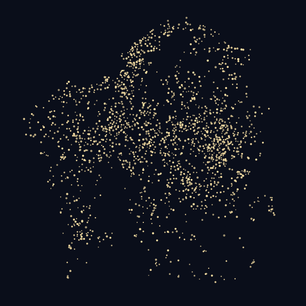
Os castros: unha constelación
1.880 castros de OpenStreetMap debuxados como estrelas: Galicia aparece coma un ceo cheo. Cada castro ten outro a 1,6 km de media, e case a metade do país está a menos de 2 km dun deles.
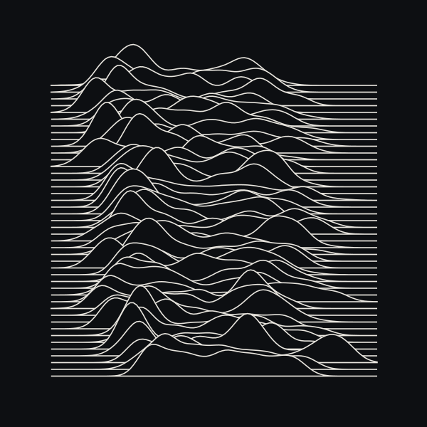
As ondas do Atlántico
A temperatura do mar fronte ás Rías Baixas, unha onda por ano dende 1982, ao xeito de Unknown Pleasures. As ondas fuxen cara á calor: a última década está 0,8 °C máis quente ca a primeira e 2023 foi o ano récord.
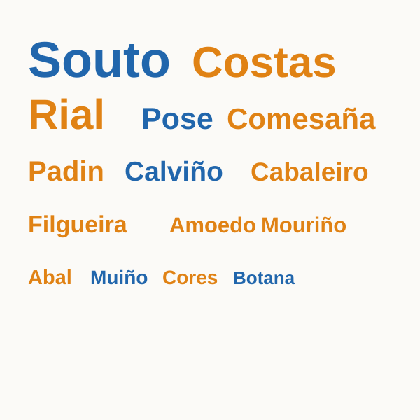
Os apelidos máis galegos
Galicia ten o 5,5 % da poboación de España, pero 50 apelidos teñen tres de cada catro portadores aquí: Souto, Costas, Rial, Pose… Un galicianómetro dos 4.410 primeiros apelidos máis comúns e un buscador para o teu.
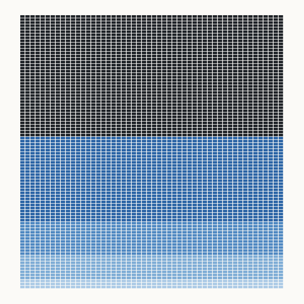
A túa vida en semanas
Unha vida galega cabe en arredor de 4.500 semanas. Pon a túa data de nacemento e verás as que levas vividas, as que che quedan en media e en que se foron: durmindo, traballando, vendo a tele, lendo…
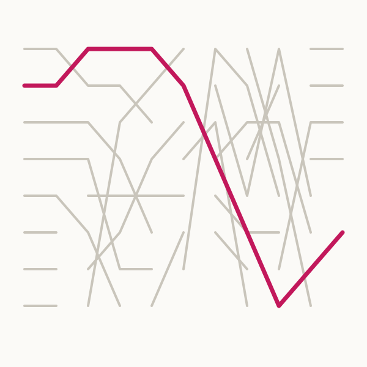
De Manuel a Mateo
Os galegos dos anos cincuenta chámanse Manuel e Carmen; os bebés de hoxe, Mateo e Sofía. Un río de rankings dos nomes de Galicia década a década, dende antes de 1930, e ano a ano dende 2000.
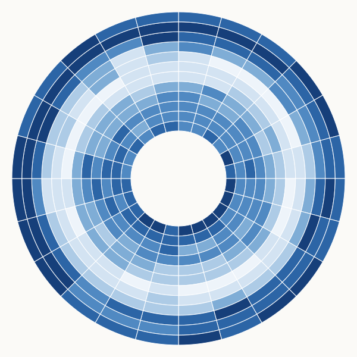
O reloxo da choiva
A que hora chove en Galicia? Dez anos de choiva, hora a hora, en seis cidades: na costa das Rías Baixas chove máis de noite e de madrugada; en Lugo e Ourense, pola tarde.
Galicia nun minuto
Cada minuto saen das farmacias 152 medicamentos, das granxas 5.690 litros de leite e das bateas 338 quilos de mexillón. Un panel en directo con quince fluxos de Galicia que empezan a sumar cando abres a páxina.
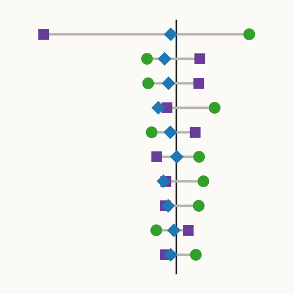
A fenda rural
No rural declárase un 31 % menos de renda ca nas cidades, pero o risco de pobreza é o máis baixo e a esperanza de vida, case a mesma. 26 indicadores do IGE para as zonas densamente poboadas, intermedias e pouco poboadas.
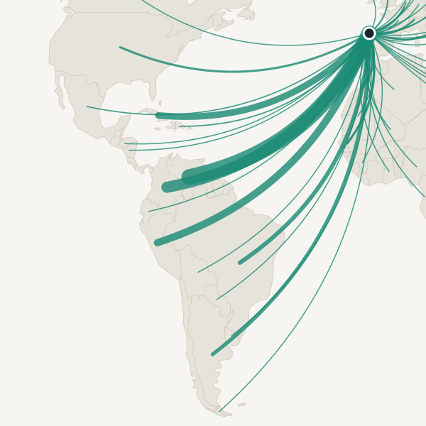
Quen chega e quen marcha
Por cada persoa que marcha de Galicia ao estranxeiro chegan case tres, sobre todo de Venezuela e Colombia. Os fluxos de 2024 país a país e comunidade a comunidade, e o saldo dende 2002.
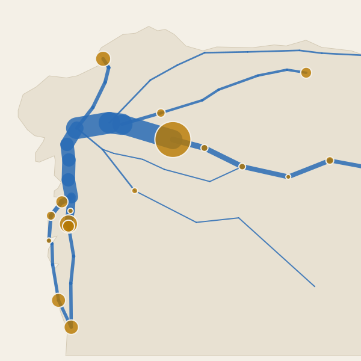
Todos os camiños levan a Compostela
530.844 peregrinos recolleron a Compostela en 2025, un récord, e un de cada tres saíu de Sarria. Os camiños co grosor dos seus peregrinos, de onde veñen e a serie desde 2004.

O galego por xeracións
A pirámide da lingua: só 7 de cada 100 nenos falan sempre en galego, fronte a 40 dos maiores de 65. Como cambiou de 2003 a 2023 e como pasa de nais a fillos.

O mar nun prato
O calendario das lonxas galegas: que se vende cada mes, cando hai veda e cando sobe o prezo. O percebe vale case o dobre no Nadal, e as lonxas venden a metade de quilos ca en 2017.

O monte de cada concello
O monte galego árbore a árbore: eucalipto, piñeiro ou frondosas, concello a concello. En 78 concellos o eucalipto xa é máis da metade do monte arborado.

De onde vén a luz
Galicia xera un terzo máis de electricidade da que consome e xa non queima carbón: o 82 % vén da auga e do vento. Os fluxos, ano a ano dende 2011.

Hai máis vacas ca persoas?
En 68 concellos galegos, si, e son cada vez máis porque marcha a xente. Se contamos tamén porcos, galiñas e ovellas en unidades gandeiras, son 128.

As raias da calor e da choiva
Cada raia é un ano en seis observatorios galegos, dende 1931. Na Coruña, os catro anos máis quentes da serie son os catro últimos. Descarga a raia da túa cidade.

Galicia apágase
As 30.518 aldeas e lugares de Galicia como puntos de luz, de 1999 a 2025. 1.070 quedaron sen ninguén e outras 5.039 teñen menos de cinco veciños.

A espiral dos lumes
Cada volta é un ano dende 1983 e cada brasa, un día de lume. En 44 anos ardeu o equivalente a case a metade de Galicia, e 2025 xa é o segundo peor ano da serie.

Que precisaría Galicia para chegar ao carbono neto cero?
Emitimos 16,6 millóns de toneladas de CO₂ e o monte absorbe 9,6. Folla de ruta por sectores para cumprir a Lei do clima en 2040, adaptada de Information is Beautiful.

Habelos, hainos: mitos sobre Galicia e a sustentabilidade
17 ideas que repetimos sen comprobar, do «aquí chove sempre» aos pirómanos e ás renovables, contrastadas con datos oficiais. Di se as crías e compara coa demais xente.

A Galicia de fóra xa é a terceira provincia
Os 313 concellos e os 563.303 galegos e galegas que viven no exterior, cada un do tamaño da súa poboación. Só A Coruña e Pontevedra suman máis xente ca a diáspora.

Biblioteca Sustentable
41 libros para entender a crise ecosocial e pensar saídas, dos clásicos de Carson e Meadows ao postcrecemento, o clima e o mundo rural. Unha lista viva que medra co tempo.
Aínda non hai visualizacións con este tema.